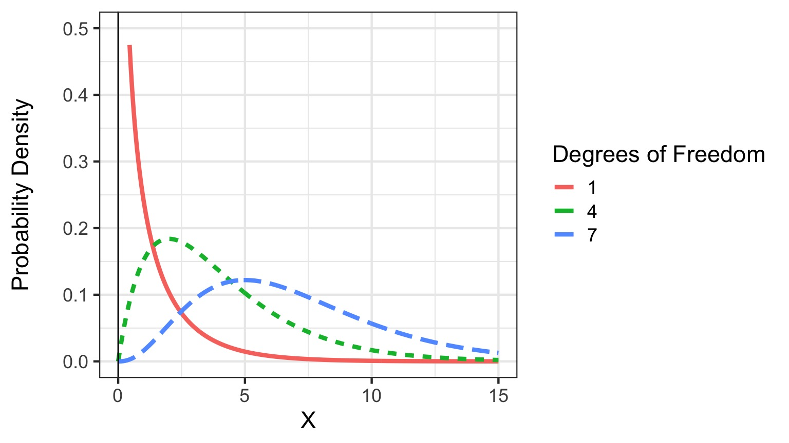

Quantifying Goodness of Fit: the \[\chi^2\]
Number of Observations in Categories
Consider the following data generating process:
- We have a number of categories
- We expect some number of observations in each category
Then add this error generating process:
Small random errors generating variation in observed values
- This error is normal
Do our observed values fit our expectations?
- \(H_0\): Observations = Expectations
- We are testing goodness of fit!
- If there is no difference, deviations should be normally distributed noise
- Differences can be positive or negtive - so we square them
- The square of a normal distribution is the χ2 distribution!
- The χ2 is defined by degrees of freedom = n-1!
The \(\chi^2\) Distribution
\[\chi^2 = \sum\frac{\displaystyle(O_i-E_i)^2}{E_i}\]

Birth Days

Are births evenly spread across the week?
Birth Days
| Day of the Week | Births |
|---|---|
| Sunday | 33 |
| Monday | 41 |
| Tuesday | 63 |
| Wednesday | 63 |
| Thursday | 47 |
| Friday | 56 |
| Saturday | 47 |
Even Expectations
| Day of the Week | Births | Expectation |
|---|---|---|
| Sunday | 33 | 50 |
| Monday | 41 | 50 |
| Tuesday | 63 | 50 |
| Wednesday | 63 | 50 |
| Thursday | 47 | 50 |
| Friday | 56 | 50 |
| Saturday | 47 | 50 |
\(\chi^2\) = 15.24 with 6 DF
p = 0.01847
What if you have more than One Set of Categories?
Eizaguirre lab
The contingency Table
| Heavily Infected | Lightly Infected | Uninfected | |
|---|---|---|---|
| Eaten by Birds | 37 | 10 | 1 |
| Not Eaten by Birds | 9 | 35 | 49 |
What is our expected frequency?
p(eaten AND uninfected) = p(eaten) x p(infected)
Eaten by Birds Not Eaten by Birds
48 93 Heavily Infected Lightly Infected Uninfected
46 45 50
p(eaten AND uninfected) = 48/141 * 50/141
E(eaten AND uninfected) = 17
\(\chi^2\) test For Contingency Tables
\[\chi^2 = \sum_{row=1}^{r}\sum_{col = 1}^{c}\frac{\displaystyle(O_{r,c}-E_{r,c})^2}{E_{r,c}}\]
df = (r-1)(c-1)
Pearson's Chi-squared test
data: ctab
X-squared = 69.756, df = 2, p-value = 7.124e-16Assumptions of \(\chi^2\) test
Given that the goal is to detect deviations from expectations given normal error, this test has a few assumptions:
- No expected values less that 1
- 80% of the expected values must be >5
If you violate assumptions:
- Combine categories or
- Use a different test (e.g., Fisher’s Exact).